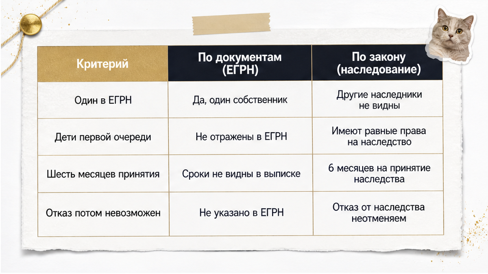
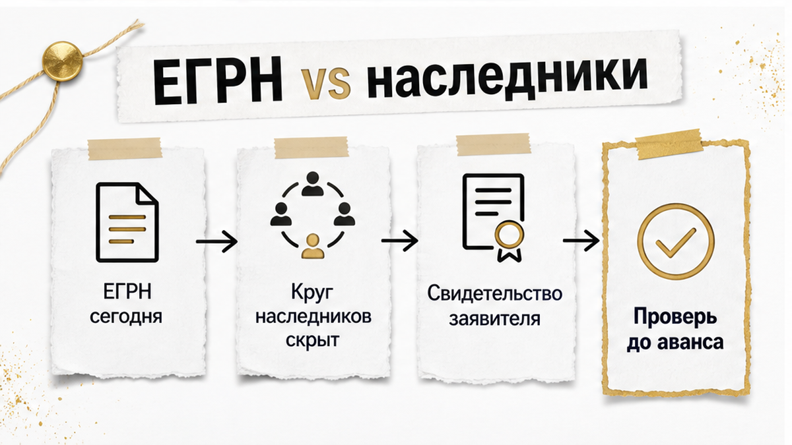
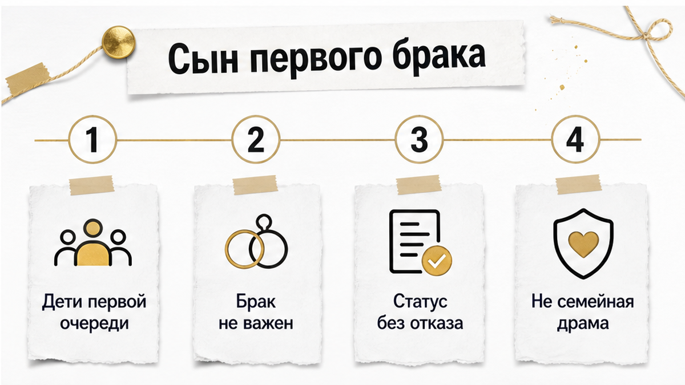
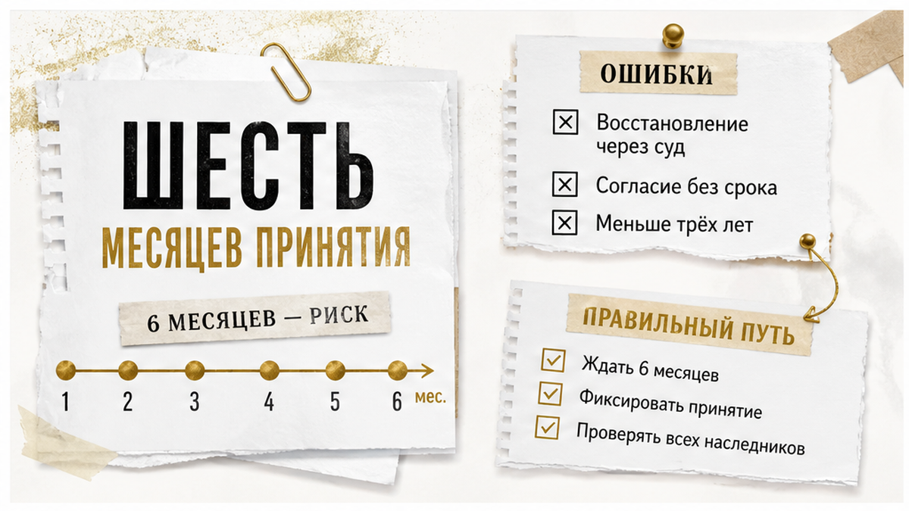
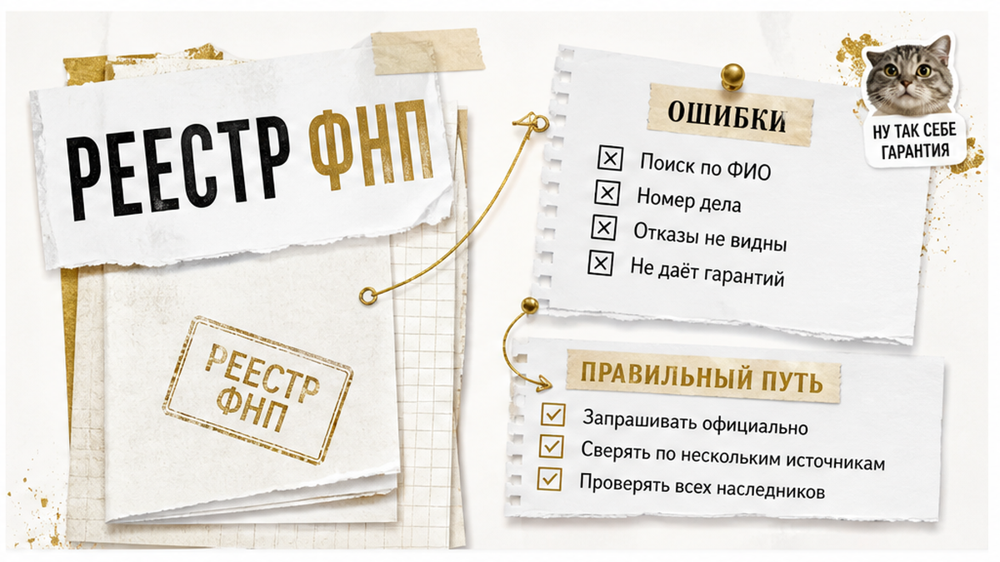
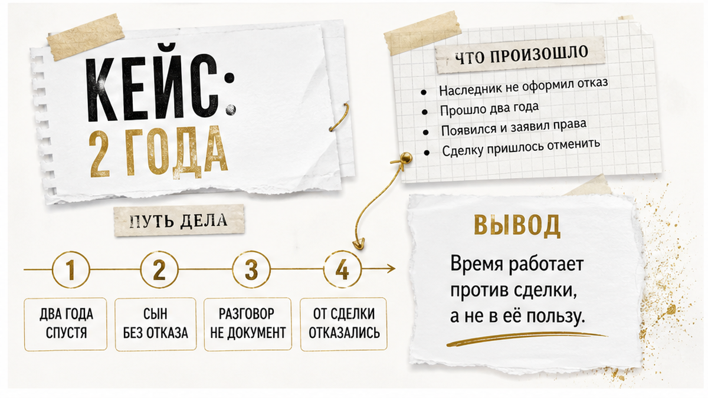
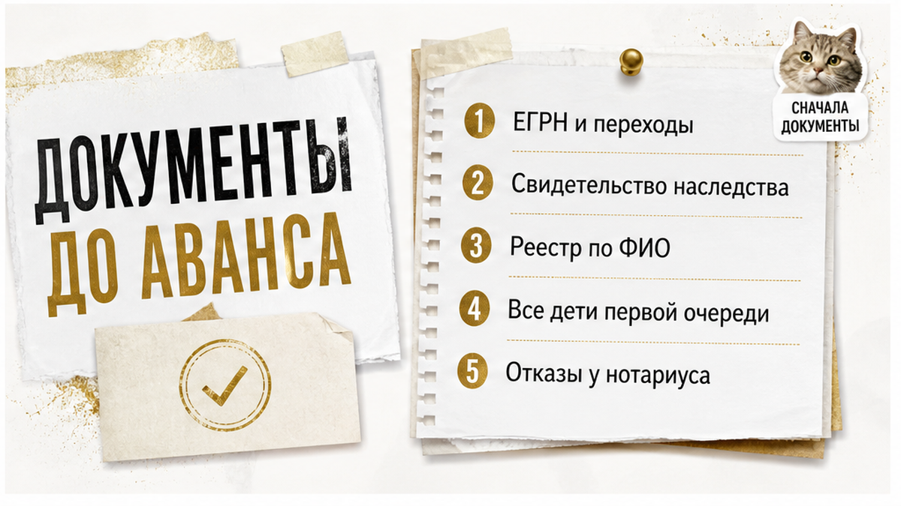

Квартира хорошая. Цена адекватная. Продавец один — и в выписке ЕГРН он тоже один. Основание права: свидетельство о праве на наследство. Отец умер около двух лет назад, наследство оформлено, всё «чисто».
А потом, между делом, в разговоре всплывает: «Ну там ещё сын есть, от первого брака. Он далеко, служит, связи нет. Отказ не писал, но мы потом разберёмся».
Вот на этом месте сделка перестаёт быть простой.
Не потому, что сын обязательно придёт и заберёт долю — он может не появиться никогда. А потому, что покупатель прямо сейчас собирается внести деньги за квартиру, круг наследников по которой никем не закрыт. И «разберёмся потом» — это не про продавца. Это про нового собственника.
Быстрый инсайт. Один собственник в ЕГРН — это ответ на вопрос «кому в итоге оформили право», а не «сколько человек имели на него право». Наследственную квартиру проверяют не по выписке, а по наследственному делу и по кругу наследников первой очереди.
Я — Святослав Шакин, The Риэлтор в Тюмени. Лично веду сделку от звонка до регистрации.
Полный разбор наследственных кейсов и как я это ловлю до аванса — в Telegram и MAX. Напишите — подключусь.

Дальше по порядку: почему стандартный пакет не отвечает на главный вопрос, что реально можно посмотреть до аванса и в какой момент я говорю покупателю «эту квартиру — нет».

Выписка ЕГРН отвечает на вопрос «кто сейчас собственник и на каком основании». Это её работа, и делает она её хорошо. Беда в том, что покупатель читает её как ответ на другой вопрос — «есть ли у кого-то ещё права на эту квартиру».
Обычный человек видит в выписке: собственник один, основание — свидетельство о праве на наследство, дата регистрации. Значит, порядок.
Я в этой же выписке вижу, чего в ней нет. Сколько человек обращалось к нотариусу. Подавал ли кто-то заявление и потом передумал. Был ли у наследодателя ребёнок от предыдущего брака, о котором нотариусу просто не сказали.
Со свидетельством то же самое. Нотариус ведёт наследственное дело по тем сведениям и документам, которые ему принесли заявители, и по тем, что он может запросить сам. У него нет базы, из которой автоматически выпадают все дети наследодателя за всю его жизнь. Не упомянул наследник про брата — брата в деле нет.
Отсюда следствие, которое каждый раз звучит для покупателя неожиданно: свидетельство подтверждает право того, кому его выдали, но не доказывает, что круг наследников первой очереди проверен полностью и что от остальных получены отказы.
Логика та же, что в другой частой истории: на сделку приезжает один человек с бумагами, а за его спиной остаются люди, чьи права этими бумагами не закрыты. Я разбирал это отдельно — продавец прилетел один, а квартиру продавали четверо. Наследство устроено похоже: документ на руках у одного, а вопрос — про всех.
Поэтому первый шаг по наследственной квартире — не «посмотреть выписку», а сменить вопрос. Не «что показывает документ», а «чего он показать не может в принципе».

Когда продавец рассказывает про сына от первого брака, он рассказывает историю отношений. Отец с ним не общался. Мать увезла ребёнка много лет назад. Он ни разу не приезжал. «Он вообще не знает, что квартира есть».
Всё это может быть чистой правдой — и всё это к наследственному праву отношения не имеет. Ст. 1142 ГК РФ относит к первой очереди детей, супруга и родителей. Дети наследуют независимо от того, в каком браке родились и состояли ли их родители в браке между собой вообще. Общался отец с сыном или нет, помогал или не помогал, знал сын про квартиру или не знал — этих условий в норме просто нет.
То же с объяснениями «он служит», «он в другом регионе», «связи нет». Служба, переезд, отсутствие контакта — обстоятельства жизни. Они могут объяснять, почему человек не пришёл к нотариусу в срок. Из очереди наследников они его не убирают.
Здесь важно не свалиться в другую крайность. Я не утверждаю, что такой сын обязательно получит долю в квартире. Он может не иметь интереса к наследству. Может не обратиться никогда. Восстановление срока — не автоматическая процедура, суд оценивает причины пропуска.
Но исходную точку покупателю нужно принять честно: пока сын от первого брака жив и не оформил нотариальный отказ, он остаётся наследником первой очереди — со всеми правами, которые из этого следуют. Дальше вопрос только в документах и в сроках. К срокам и переходим.

Самая убедительная фраза на просмотре звучит так: «Да прошло два года уже, все сроки вышли, чего вы боитесь».
Срок правда есть. Он просто работает не про то.
Статья 1154 ГК РФ: наследство принимают в течение шести месяцев со дня открытия наследства, а день открытия — день смерти. Обратите внимание на слово. Шесть месяцев — срок для принятия. Это не дата, после которой наследник перестаёт быть наследником.
Дальше начинается статья 1155, и у человека, который срок пропустил, есть две дороги.
Первая — суд. Срок восстанавливают, если причины пропуска признают уважительными и человек пришёл в течение шести месяцев после того, как эти причины отпали.
Вторая — мимо суда. Остальные наследники, которые наследство уже приняли, дают письменное согласие. И вот тут важная деталь: специального предельного срока для такого согласия закон не устанавливает.
Из этого следует одна простая вещь для покупателя. Календарь не гарантирует ничего. Гарантирует закрытый круг наследников с оформленными отказами — то есть документы, а не количество прошедших лет.
Что бывает, когда наследник появляется позже. Прежнее свидетельство о праве на наследство может быть аннулировано. Выдаётся новое. Меняются доли. Вслед за долями меняются записи в ЕГРН.
Перечитайте предыдущий абзац ещё раз. Меняется ровно тот документ, на который покупатель смотрел как на железное основание.
В работе я держу практический ориентир: право перешло к продавцу по наследству меньше трёх лет назад — смотрю внимательнее и прошу больше бумаг. Скажу честно, чтобы никто потом не цитировал меня криво: три года — не норма ГК РФ и не срок исковой давности по наследственным спорам. Это внутренний порог проверки. Не больше и не меньше.
И отдельный сюжет, который встречается чаще, чем хотелось бы. Наследник служит. Живёт в другом регионе. Связь потеряна, «мы с ним лет десять не общаемся».
Всё это отлично объясняет, почему человек не пришёл к нотариусу. Но объяснение и утрата статуса — разные вещи. Наследственный статус не отменяется отсутствием контакта.
Не переворачивайте это в обратную сторону: из сказанного не следует, что такой сын обязательно получит долю в вашей квартире. Следует другое — вопрос открыт, а не закрыт.
По той же причине опасно платить «пока разбираются». Деньги уходят быстрее, чем закрываются документы, — про это отдельная история, где расписку написали, а денег на счёте не оказалось.

Если в основании права стоит свидетельство о праве на наследство, первое, что я открываю, — публичный сервис Федеральной нотариальной палаты на notariat.ru.
Поиск идёт по точному ФИО наследодателя. Даты рождения и смерти сужают выборку. На выходе — номер наследственного дела и нотариус, который его ведёт.
Это много. Вы перестаёте верить на слово: дело есть, у него есть номер, у номера есть конкретный нотариус. Понятно, куда идти за составом дела.
И это мало. Реестр не покажет, кто из наследников заявился, кто отказался и сколько вообще детей было у наследодателя. Пустой результат не доказывает, что наследников нет. Это единственный вывод, который из пустоты делать нельзя.
| Шаг проверки | Что узнаёте точно | Что остаётся за кадром |
|---|---|---|
| Поиск в реестре ФНП по ФИО наследодателя | Есть ли дело, его номер, какой нотариус ведёт | Состав наследников, заявления, отказы |
| Выписка ЕГРН на квартиру | Кто собственник сегодня и каким документом оформлено право | Полнота круга наследников первой очереди |
| Свидетельство о праве на наследство | Кому и на какую долю выдано | Были ли ещё дети и писали ли они отказ |
| Состав наследственного дела у нотариуса | Кто обращался, какие отказы приняты | Наследник, который не обращался вообще |
Последняя строка — главная в таблице. Даже полный комплект документов не вытащит на свет того, кто ни к нотариусу, ни в суд пока не приходил.
Проверка снижает риск и делает его видимым. Гарантией она не становится, и продавать её как гарантию я не буду.
Похожая ловушка — в истории про доверенность, где продавец приехал один, а квартиру продавали четверо. Документ на руках был. Круг лиц он не закрывал.

Случай из практики. Привожу как пример, не как статистику.
Предавансовая проверка. Отец умер примерно два года назад. В ЕГРН один собственник, основание — свидетельство о праве на наследство. На первый взгляд бумаги ровные.
Начинают разбирать состав семьи. Выясняется: у наследодателя есть сын от первого брака. Нотариального отказа нет. К нотариусу он не приходил.
Ответ продавцов дословно тот, из-за которого такие сделки и рассыпаются: «Покупайте так, с отказом потом разберёмся».
Отчёт по этой проверке стоил 2 900 ₽ — это цифра из конкретного разбора, а не рыночная ставка.
Что тут нужно понять. «Потом» — это не документ. Отказ оформляется нотариально и в свой срок, задним числом его к сделке не подшить. Покупатель, который согласился на «потом», покупает не квартиру с недостатком. Он покупает спор с открытым финалом.
От сделки в том случае отказались. Не потому, что сын гарантированно получил бы долю — этого никто не обещал. А потому, что закрывать круг наследников — обязанность продавца, а не покупателя.
Механика та же, что в истории, где задаток почти внесли за 48 часов до торгов. Чем сильнее давят «решайте сегодня», тем дороже стоит спокойная проверка.

Наследственная квартира никогда не проверяется одной бумагой. Каждый документ отвечает на свой узкий вопрос — и по отдельности любой из них выглядит успокаивающе.
Круг наследников закрывается только там, где документы начинают подтверждать друг друга. Не по очереди. Одновременно.
Что имеет смысл собрать до того, как деньги ушли:
Дальше бумаги нужно не сложить в папку, а сверить. Вот что каждая из них реально закрывает — и чего не закрывает никогда.
| Документ | Что подтверждает | Чего не подтверждает |
|---|---|---|
| Выписка ЕГРН | Кто собственник сегодня и на каком основании зарегистрировано право | Что все наследники первой очереди выявлены и учтены |
| Свидетельство о праве на наследство | Что нотариус оформил права конкретного наследника на конкретную долю | Что других наследников той же очереди не существует |
| Реестр наследственных дел ФНП | Что дело открывалось, его номер и кто нотариус | Состав наследников; пустой результат не означает, что наследников нет |
| Документы о браках | Семейную хронологию наследодателя | Наличие или отсутствие детей от каждого брака |
| Нотариальный отказ | Что конкретный человек отказался от наследства в срок | Позицию того, чей отказ не оформлен |
Отдельно про сроки, потому что здесь чаще всего успокаиваются зря. Шесть месяцев со дня смерти — это срок принятия наследства по статье 1154 ГК РФ. Не срок, после которого тема закрывается сама.
Статья 1155 ГК РФ допускает и восстановление срока судом при уважительных причинах, и принятие наследства без суда — при письменном согласии остальных наследников, уже принявших наследство. Предельного срока для такого согласия закон не устанавливает.
Практика перепроверять переходы права моложе трёх лет — это рабочая осторожность рынка. Не норма кодекса.
И если последующее принятие всё-таки случилось, оно не остаётся внутри нотариальной конторы. Прежнее свидетельство может быть аннулировано, выдано новое, изменения дойдут до ЕГРН. Поэтому «отказ потом» — это не отложенная формальность, а отложенный сюжет, внутри которого стоит ваша квартира.
Порядок у меня всегда один: сначала пакет документов, потом деньги. Разбор до аванса стоит дешевле любого разбора после — про историю с распиской, по которой денег на счёте не оказалось, я писал отдельно.
Список, по которому я прохожу наследственные квартиры. Каждый пункт — не приговор сделке, а повод не платить, пока нет ответа.
Сразу про границы. Ни один пункт не говорит, что сын от первого брака обязательно получит долю — он может не заявить права никогда. Проверка не даёт гарантии. Она даёт понимание, какой именно риск вы покупаете и за какие деньги.
Реестр наследственных дел не выявляет всех наследников. Нотариус работает с теми, кто к нему обратился, и со сведениями, которые ему представили.
Что меняется после проверки: вы перестаёте платить за версию продавца. Один собственник в ЕГРН — это не «претензий нет», это «сегодня зарегистрирован один». Свидетельство — не справка о том, что всех посчитали. Шесть месяцев — не забор, за которым безопасно.
Покупатель из примера в итоге отказался. Не потому, что нашёл суд или чьи-то претензии — их не было. Потому что на вопрос «где отказ второго наследника первой очереди» ответа не появилось ни у продавца, ни в документах. Когда покупаешь на свои — этого достаточно, чтобы сказать «нет» и пойти смотреть следующий вариант.
Разборы похожих наследственных историй — в Telegram и MAX. Напишите до аванса — разберём вашу ситуацию.
Разберём наследственную квартиру и круг наследников до перевода денег — или подключусь в сделку на вторичке в Тюмени.
Материал проверен: Святослав Шакин, личный риэлтор в Тюмени. Ориентир для покупателя, не индивидуальная юридическая консультация.